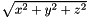

|
Traffic city3D
v1.0
|
|
Traffic city3D
v1.0
|
#include <opengldisplay.h>

Classes | |
| struct | quaternion |
| Declaration d'un quaternion. Les quaternions sont utiles pour les rotations et les déplacement d'objet, ils nous permettent de nous affranchir des matrices de rotations qui sont bien plus gourmandes en termes de calculs. \ param x Composante x \ param y Composante y \ param z Composante z \ param w Composante w. Plus de détails... | |
Fonctions membres publiques | |
| openGlDisplay (int view, QWidget *parent=0) | |
| double | lengthVect (QVector3D vect) |
| Calcul d'une distance Elle est calculée selon cette formule : . Plus de détails... | |
| QVector3D | normalizeVect (QVector3D vect) |
| Normalisataion d'un vecteur Pour normaliser un vecteur, nous divisons chacun de ses composantes par sa longeur. Plus de détails... | |
| QVector3D | Difference (QVector3D vect1, QVector3D vect2) |
| Soustraction entre deux vecteurs. Chacun des composant du vecteur est soustrait aux composants d'un autre. Plus de détails... | |
| QVector3D | CrossProduct (QVector3D vect1, QVector3D vect2) |
| Quand a et b commence à un point d'origine (0, 0, 0), le produit terminera à : cx = aybz - azby cy = azbx - axbz cz = axby - aybx La fonction pour calcule un produit de vecteur : Pour la composante x : Pour la composante y : Pour la composante z : . Plus de détails... | |
| double | length (quaternion quat) |
| Fonction pour avoir la longeur d'un quaternion On commence par calculer la longeur d'un quaternion pour ensuite le normaliser, ce qui est possible grâce la forumle de la distance Euclidienne : . Plus de détails... | |
| quaternion | normalizeQuat (quaternion quat) |
| quaternion | conjugate (quaternion quat) |
| Fonction pour avoir le conjugué d'un quaternion Pour avoir le conjugé d'un quaternion, on prend simplement son opposé : . Plus de détails... | |
| quaternion | mult (quaternion A, quaternion B) |
| La multiplication d'un quaternion A par un quaternion B est faite selon : Ce qui donne :  . Plus de détails... | |
| QVector3D | quatRotate (QVector3D v, quaternion q) |
| Rotation d'un quaternion depuis un vecteur. Création d'un nouveau quaternion avec un quaternion tampon avec le vecteur (la composante w est remplit à 0). Ensuite, on multiplie ce quaternion avec le congugé du quaternion initial. Plus de détails... | |
| openGlDisplay (QWidget *parent=0) | |
| void | getData () |
| Toutes les données d'import sont gérées via cette méthode. Cette méthode est appelé au chargement de la classe. Plus de détails... | |
| void | GestionLumiere () |
| Gestion de la lumière (soleil) Plus de détails... | |
| void | GestionCamera (int numCamera) |
| void | AfficherTopographie () |
| Affichage des triangles de topographie. Plus de détails... | |
| void | AfficherTopographieFilaire () |
| Affichage de la topographie en mode filaire. Plus de détails... | |
| void | AffichierRoutes () |
| void | AffichierRoutesFilaire () |
| void | AfficherBatiments () |
| Affichage des triangles de bâtiments. Plus de détails... | |
| void | AfficherSkyBox () |
| Affichage de l if(tools::ComparaisonCoordonnees(positionVoiture,coordPoint2))a skybox. Plus de détails... | |
| void | AfficherObj3D () |
| Affichage des objets 3D. Plus de détails... | |
| void | AffichierRouteFilaire () |
| Affichage des tronçon de route en mode filaire. Plus de détails... | |
| void | AfficherTrajets () |
| void | ChargerObjetsVoitures () |
| Charge les objets voitures. Plus de détails... | |
| void | AfficherArbres () |
| void | initializeGL () |
| Initialisation des variables. Plus de détails... | |
| void | resizeGL (int width, int height) |
| Taille de la fenêtre OpenGl. Plus de détails... | |
| void | paintGL () |
| Cette méthode est appelée à toute les images par seconde. Toute la scene 3D est gérée ici. C'est là que la méthode PlaceSceneElements() est appelée. Plus de détails... | |
| void | PlaceSceneElements () |
| Tous les triangles sont affichés ici. Plus de détails... | |
| void | toggleFullWindow () |
| Méthode pour afficher la vue 3D en plein écran ou non. Plus de détails... | |
| void | updateView () |
| void | ChangePitch (GLfloat degrees) |
| Change le tangage de la caméra (pitch) selon les mouvements de la sourirs. Plus de détails... | |
| void | ChangeHeading (GLfloat degrees) |
| Change l'angle d'inclinaison de la caméra (heading) selon les mouvements de la sourirs. Plus de détails... | |
| void | Move2D (int x, int y) |
| Déplacement de la caméra. Plus de détails... | |
| const aiScene * | ChargerOjb3D (QString chemin) |
 Fonctions membres publiques hérités de myGLWidget Fonctions membres publiques hérités de myGLWidget | |
| myGLWidget (int framesPerSecond=0, QWidget *parent=0, char *name=0) | |
Fonctions membres publiques statiques | |
| static quaternion | Q_from_AngAxis (double angle, QVector3D axis) |
| Fonction qui permet de passer d'un angle d'Euler en quaternion Les angles doivent être en degré pour ce calcul. Le composant w d'un quaternion est calculé avec le cosinus de la moitié de l'angle Le composant x d'un quaternion est calculé avec la composante x du vecteur * le sinus de l'angle Le composant y d'un quaternion est calculé avec la composante y du vecteur * le sinus de l'angle Le composant z d'un quaternion est calculé avec la composante z du vecteur * le sinus de l'angle . Plus de détails... | |
Fonctions membres protégées | |
| void | mouseMoveEvent (QMouseEvent *event) |
| Mouvements de la souris. Plus de détails... | |
| void | keyPressEvent (QKeyEvent *) |
| Evénements clavier. Plus de détails... | |
Membres hérités additionnels | |
| Connecteurs publics hérités de myGLWidget | |
| virtual void | timeOutSlot () |
| Fonction pour mettre ? jour le dessin. Plus de détails... | |
Cette calsse gère toute la partie 3D. on trouvera le chargement de la donnée, sa conversion, son affichage et la gestion de l'animation 4D.
|
explicit |
|
explicit |
| void openGlDisplay::AfficherArbres | ( | ) |
| openGlDisplay::AfficherBatiments | ( | ) |
Affichage des triangles de bâtiments.
| openGlDisplay::AfficherObj3D | ( | ) |
Affichage des objets 3D.
| openGlDisplay::AfficherSkyBox | ( | ) |
Affichage de l if(tools::ComparaisonCoordonnees(positionVoiture,coordPoint2))a skybox.

| openGlDisplay::AfficherTopographie | ( | ) |
Affichage des triangles de topographie.
| openGlDisplay::AfficherTopographieFilaire | ( | ) |
Affichage de la topographie en mode filaire.
| void openGlDisplay::AfficherTrajets | ( | ) |

| openGlDisplay::AffichierRouteFilaire | ( | ) |
Affichage des tronçon de route en mode filaire.
| void openGlDisplay::AffichierRoutes | ( | ) |
| void openGlDisplay::AffichierRoutesFilaire | ( | ) |
| openGlDisplay::ChangeHeading | ( | GLfloat | degrees | ) |
Change l'angle d'inclinaison de la caméra (heading) selon les mouvements de la sourirs.
| openGlDisplay::ChangePitch | ( | GLfloat | degrees | ) |
Change le tangage de la caméra (pitch) selon les mouvements de la sourirs.

| openGlDisplay::ChargerObjetsVoitures | ( | ) |
Charge les objets voitures.
| const aiScene * openGlDisplay::ChargerOjb3D | ( | QString | chemin | ) |
|
inline |
Fonction pour avoir le conjugué d'un quaternion Pour avoir le conjugé d'un quaternion, on prend simplement son opposé :
.
|
inline |
Quand a et b commence à un point d'origine (0, 0, 0), le produit terminera à : cx = aybz - azby cy = azbx - axbz cz = axby - aybx La fonction pour calcule un produit de vecteur :
Pour la composante x :
Pour la composante y :
Pour la composante z :
.
| vect1 | Premier vecteur |
| vect2 | Deuxième vecteur |
|
inline |
Soustraction entre deux vecteurs. Chacun des composant du vecteur est soustrait aux composants d'un autre.
| vect1 | Premier vecteur. |
| vect2 | Deuxième vecteur. |
| void openGlDisplay::GestionCamera | ( | int | numCamera | ) |
| openGlDisplay::GestionLumiere | ( | ) |
Gestion de la lumière (soleil)
| openGlDisplay::getData | ( | ) |
Toutes les données d'import sont gérées via cette méthode. Cette méthode est appelé au chargement de la classe.

|
virtual |
Initialisation des variables.
Implémente myGLWidget.

|
protected |
Evénements clavier.
|
inline |
Fonction pour avoir la longeur d'un quaternion On commence par calculer la longeur d'un quaternion pour ensuite le normaliser, ce qui est possible grâce la forumle de la distance Euclidienne :
.
Fonction pour normaliser un quaternion Normaliser un quaternio est similaire à la normalisation d'un vecteur, on divise chaque composante par la longeur.
| quat | Quaternion |
|
inline |
Calcul d'une distance Elle est calculée selon cette formule :
.
| vect | Vecteur 3D. |
|
protected |
Mouvements de la souris.
| openGlDisplay::Move2D | ( | int | x, |
| int | y | ||
| ) |
Déplacement de la caméra.
|
inline |
La multiplication d'un quaternion A par un quaternion B est faite selon :
Ce qui donne :
.
|
inline |
|
inline |
Normalisataion d'un vecteur Pour normaliser un vecteur, nous divisons chacun de ses composantes par sa longeur.
| vect | Vecteur 3D |
|
virtual |
Cette méthode est appelée à toute les images par seconde. Toute la scene 3D est gérée ici. C'est là que la méthode PlaceSceneElements() est appelée.
Implémente myGLWidget.
| openGlDisplay::PlaceSceneElements | ( | ) |
Tous les triangles sont affichés ici.
|
inlinestatic |
Fonction qui permet de passer d'un angle d'Euler en quaternion Les angles doivent être en degré pour ce calcul. Le composant w d'un quaternion est calculé avec le cosinus de la moitié de l'angle
Le composant x d'un quaternion est calculé avec la composante x du vecteur * le sinus de l'angle
Le composant y d'un quaternion est calculé avec la composante y du vecteur * le sinus de l'angle
Le composant z d'un quaternion est calculé avec la composante z du vecteur * le sinus de l'angle
.
|
inline |
Rotation d'un quaternion depuis un vecteur. Création d'un nouveau quaternion avec un quaternion tampon avec le vecteur (la composante w est remplit à 0). Ensuite, on multiplie ce quaternion avec le congugé du quaternion initial.
|
virtual |
Taille de la fenêtre OpenGl.
| width | Largeur de la fenêtre. |
| height | Hauteur de la fenêtre. |
Implémente myGLWidget.
| openGlDisplay::toggleFullWindow | ( | ) |
Méthode pour afficher la vue 3D en plein écran ou non.
Méthode appelée à chaque mouvement de souris Elle permet un rafraichissement (appel vers PlaceSceneElements())
| void openGlDisplay::updateView | ( | ) |
 1.8.13
1.8.13